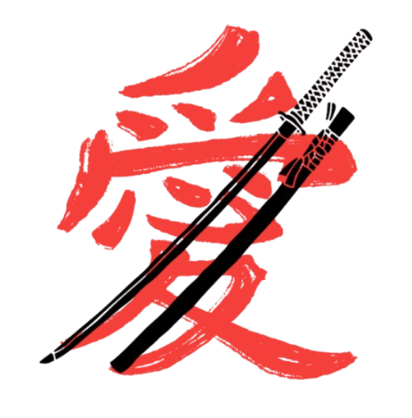

SOBRE

A Yng e Yang é uma empresa inovadora e dinâmica, que se destaca no mercado por sua abordagem equilibrada e harmoniosa entre tradição e modernidade.
Com um nome inspirado no conceito filosófico oriental do Yin e Yang, que representa a dualidade e a busca pelo equilíbrio, a Yng e Yang busca aplicar esse princípio em seus produtos e serviços, oferecendo soluções que atendem a diferentes necessidades e contextos de seus clientes.
Fundada com a missão de promover a harmonia entre a criatividade e a tecnologia, a empresa se dedica a oferecer produtos de alta qualidade e serviços excepcionais, sempre com foco no bem-estar e na satisfação dos seus consumidores.
A Yng e Yang acredita que o equilíbrio é a chave para um desenvolvimento sustentável, e é por isso que suas práticas empresariais refletem um compromisso com a responsabilidade ambiental e social.
Seja no setor de tecnologia, moda, alimentação ou design, a Yng e Yang se destaca pela capacidade de inovar, respeitando as tradições culturais e buscando sempre o melhor para seus clientes.
A empresa oferece uma ampla gama de produtos e serviços, desde itens exclusivos até soluções personalizadas que atendem às necessidades específicas de cada cliente.
Além disso, a Yng e Yang preza por criar um ambiente de trabalho colaborativo e inclusivo, onde a diversidade é valorizada e as ideias podem florescer de forma criativa.
Seus colaboradores são incentivados a pensar fora da caixa e a desenvolver soluções que tragam benefícios não apenas para a empresa, mas para a sociedade como um todo.